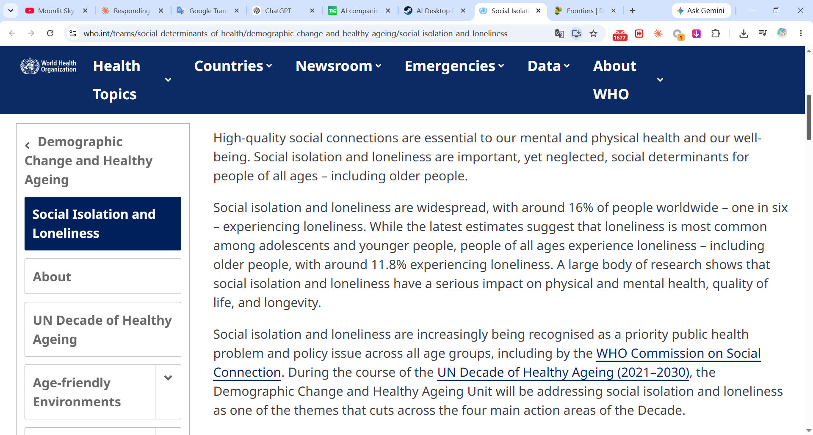
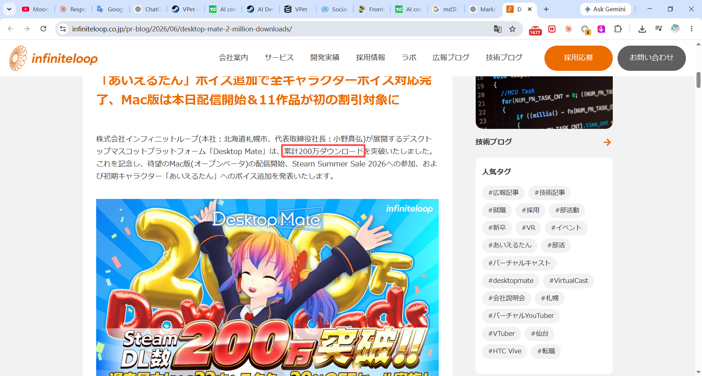
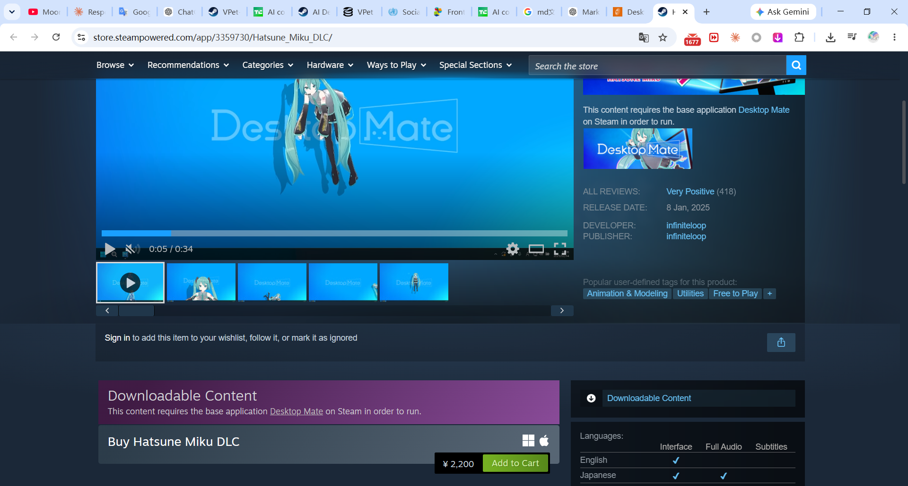
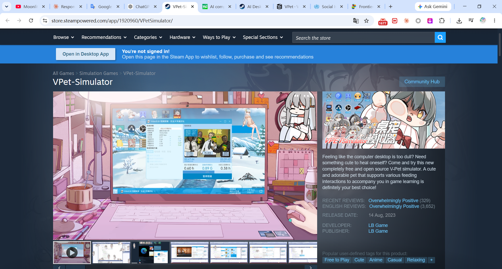
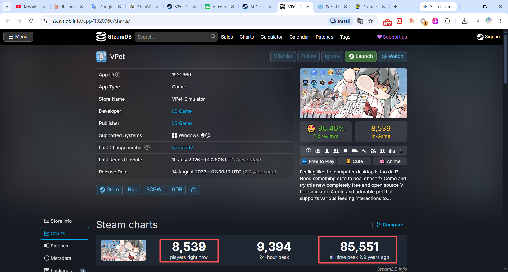

Initial Market Evidence: Guga AI Desktop Companion
1. Core Commercial Thesis
This product should not be understood as simply “selling sprites.”
The underlying commercial logic is:
Emotional-connection demand + a cute and recognizable character + persistent desktop presence + AI interaction
A desktop companion can provide a low-pressure sense of presence, responsiveness, and familiarity. Cute character design can make the interaction more approachable and emotionally engaging, while AI adds conversation, memory, personality, and continuity.
The evidence below does not guarantee that Guga will succeed. It shows that the underlying need, adjacent product categories, and several monetization paths already exist.
2. Why Emotional Companionship Has Demand
The World Health Organization reports that approximately one in six people worldwide — around 16% — experience loneliness (WHO). WHO also notes that loneliness is especially common among adolescents and younger people (WHO).

This does not mean that every lonely person will purchase an AI companion. It does show that unmet social and emotional connection is a widespread need rather than a niche assumption.
A peer-reviewed 2025 study involving 1,379 college students (Frontiers in Public Health) found that loneliness mediated the relationship between depression and more frequent use of conversational AI for companionship (Frontiers in Public Health). This supports the narrower point that some users already turn to conversational AI as a form of compensatory social or emotional interaction.
Key Evidence
| Signal | Evidence | Interpretation |
|---|---|---|
| Global loneliness | About 1 in 6 people / 16% worldwide (WHO) | Emotional connection is a substantial unmet need |
| Younger audiences | WHO identifies adolescents and younger people as especially affected (WHO) | The need overlaps with digitally engaged audiences |
| AI companionship behaviour | Study sample of 1,379 students (Frontiers) | Loneliness is associated with more frequent companion-oriented AI use |
3. Consumers Already Pay for AI Companionship
Appfigures estimated that AI companion apps had generated approximately US$221 million in cumulative worldwide consumer spending by July 2025 (TechCrunch, citing Appfigures).
The same analysis reported that category revenue in 2025 to date was 64% higher than during the same period in 2024 (TechCrunch, citing Appfigures). It also reported that approximately 33 AI companion apps had exceeded US$1 million in lifetime consumer spending (TechCrunch, citing Appfigures).
These estimates show that users already pay for personalized digital companionship. They also show that the category is competitive: the top 10% of apps generated 89% of category revenue (TechCrunch, citing Appfigures). The opportunity is real, but execution and positioning matter.


Key Evidence
| Metric | Data | Interpretation |
|---|---|---|
| Cumulative AI companion spending | US$221 million by July 2025 (source) | Users already pay for digital companionship |
| Revenue growth | +64% year over year (source) | The category was still expanding |
| Apps above US$1M lifetime spending | About 33 apps (source) | Commercial success is not limited to one isolated company |
| Revenue concentration | Top 10% generated 89% (source) | Strong differentiation is necessary |
Data note: Appfigures figures are third-party app-store estimates, not audited financial statements from every company.
4. Desktop Mate: Paid Desktop Characters at Scale
Desktop Mate is a direct precedent for persistent desktop characters.
The developer announced that Desktop Mate had exceeded two million cumulative downloads by June 2026 (infiniteloop official announcement).

The product uses a free base application with paid licensed character DLC. Selected characters are listed at US$14.99 (Steam: Hatsune Miku DLC), demonstrating a clear free-software-plus-paid-character model.

The Steam description shows characters sitting on application windows, reacting to the cursor, and remaining present on the user’s desktop (Desktop Mate on Steam).
What Desktop Mate Demonstrates
| Evidence | Data | Commercial implication |
|---|---|---|
| Product reach | 2 million+ downloads by June 2026 (source) | Large-scale interest in persistent desktop characters |
| Base product | Free application (source) | Low-friction user acquisition |
| Character monetization | Selected DLC at US$14.99 (source) | Users can be monetized at the individual-character level |
| Value proposition | Persistent visual presence and interaction (source) | The desktop-companion behaviour is already understandable to users |
Desktop Mate does not prove that every desktop companion will be profitable. It does directly disprove the claim that there is no established model for monetizing persistent desktop characters.
5. VPet-Simulator: A Second Successful Desktop-Pet Example
VPet-Simulator provides a second, independent example of strong demand for desktop pets.
The Steam product describes itself as free, open-source desktop-pet software with feeding interactions, Steam Workshop support, and more than 200 types of animation (VPet-Simulator on Steam).
As of July 2026, the Steam page showed 51,311 total user reviews, of which 50,440 were positive (VPet-Simulator on Steam). SteamDB recorded an all-time peak of 85,551 concurrent players (SteamDB).
These figures do not provide audited revenue because the base application is free. They do provide strong evidence that a cute, interactive desktop pet can attract and retain a very large audience.
What VPet-Simulator Demonstrates
| Evidence | Data | Commercial implication |
|---|---|---|
| User response | 51,311 total Steam reviews (source) | Large-scale product adoption and engagement |
| Positive response | 50,440 positive reviews (source) | Strong user satisfaction |
| Peak usage | 85,551 all-time concurrent players (source) | Desktop-pet software can achieve viral-scale attention |
| Content depth | More than 200 animation types (source) | Reactions and animation variety are part of the value |
| Community ecosystem | Steam Workshop support (source) | User-created content can extend retention and variety |
VPet-Simulator is particularly relevant because it shows that desktop-pet demand is not limited to famous licensed IP. A well-designed original cute character can also attract a substantial community.
VPet-Simulator basic info

all-time peak of 85,551 concurrent players evidence

6. Why Cute Character Design Matters
The claim should not be that “cute things always sell.” A more defensible claim is:
Cute and expressive character design can increase emotional appeal, identification, closeness, and purchase intention.
A study published in the Journal of Business Research found that stronger identification with cute character imagery increased intention to purchase character merchandise, while emotional value and self-image congruence influenced impulse buying (ScienceDirect).
This is commercially relevant because an AI companion is not purchased only for technical capability. Users may also be paying for:
- emotional comfort;
- a character they enjoy looking at;
- a stable and recognizable personality;
- a feeling of familiarity;
- collectible or customizable character content.
The character is therefore not merely decoration around the AI. It is part of the product’s emotional value and differentiation.
7. The Combined Opportunity
The proposed product sits between two already-demonstrated categories:
AI Companions
Users pay for:
- conversation;
- memory and personalization;
- voice;
- role-play;
- emotional responsiveness;
- continuity over time.
Desktop Pets and Characters
Users respond to:
- persistent visual presence;
- cute character design;
- animation and reactions;
- character DLC;
- customization;
- community-created content.
Guga Product Thesis
A Guga desktop companion could combine both categories:
A recognizable character who remains on the desktop, reacts to the user, speaks with a consistent personality, remembers previous interactions, and becomes more familiar over time.
The value is not simply the sprite. The value is the relationship layer added to an appealing character.
8. Potential Monetization Models
| Model | Structure | Supporting precedent |
|---|---|---|
| Free base app + paid character DLC | Free entry, characters sold separately | Desktop Mate characters listed at US$14.99 (source) |
| One-time purchase | Pay once for the desktop companion | Common desktop-software model |
| AI subscription | Recurring fee for memory, voice, or cloud conversation | AI companion apps generated US$221M cumulative spending by July 2025 (source) |
| Cosmetic packs | Outfits, voices, expressions, and animations | Character-DLC model demonstrated by Desktop Mate (source) |